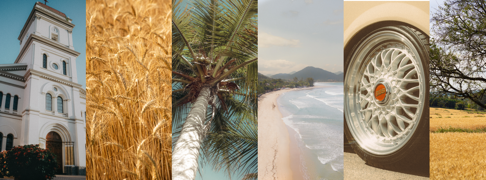

-

 Adobe Portifólio
Adobe Portifólio
Marketplace NFT


William Peixinho: O Fotógrafo Analógico e Amante da Cultura Clássica

William Peixinho é um fotógrafo apaixonado que encontra sua expressão artística na fotografia analógica. Para William, o processo de capturar imagens com uma câmera analógica vai muito além do resultado final impresso em papel fotográfico. É a jornada, o ritual e a atenção aos detalhes que realmente o cativam nesse mundo visual. Com uma predileção pelo cotidiano, William explora as nuances da vida diária através de sua lente analógica. Ele encontra beleza na simplicidade das coisas comuns, capturando momentos efêmeros que muitas vezes passam despercebidos no ritmo acelerado da vida moderna. Além de sua paixão pela fotografia, William Peixinho é um entusiasta da tecnologia, encontrando um equilíbrio entre o antigo e o novo. Enquanto aprecia as conveniências e possibilidades oferecidas pela tecnologia moderna, ele também valoriza profundamente a cultura clássica e o trabalho manual. É essa dualidade entre o contemporâneo e o tradicional que define a abordagem única de William em sua arte. Ele não apenas captura imagens, mas também busca compreender a história por trás de cada fotografia. Sua curiosidade o leva a explorar técnicas artesanais e a mergulhar nas raízes da fotografia, honrando os mestres do passado enquanto abraça as inovações do presente. Ser autêntico e produtivo são princípios que William Peixinho incorpora em sua vida e em seu trabalho. Ele acredita na importância de criar algo significativo e autêntico, algo que ressoe com a alma do observador. Seja através de suas fotografias ou de seus estudos em Python e design gráfico, William busca constantemente expandir seus horizontes criativos e contribuir de forma significativa para o mundo ao seu redor.